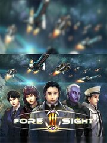

Foresight
Foresight
Detalles
|  | |
| Tiempo de juego | 2h 23m 0s |
| Última actividad | 13/04/2015 19:33:02 |
| Añadido | 09/04/2015 |
| Modificado | Nunca |
| Estado de finalización | Jugado |
| Librería | Steam |
| Fuente | Steam |
| Plataforma | PC (Windows) |
| Fecha de lanzamiento | 28/11/2014 |
| Puntuación de la Comunidad | 72 |
| Puntuación de la Crítica | |
| Puntuación de usuario | |
| Género | Indie Strategy |
| Desarrollador | Strides Interactive |
| Editor | mNosGaming |
| Característica | Achievements Cloud Saves Co-Op Multi-Player Online Co-Op Single Player Trading Cards |
| Enlaces | Community Hub Discussions Guides News Store Page PCGamingWiki Achievements |
| Tag | |
Descripción
Redefining Strategy in RTS games.
Foresight is an epic space-based RTS game that throws you, the player, into the thick of the battle as a commander. Lead huge fleets, armed with fighters and bombers across wormholes to fight it out with your enemy. Launch bombing missions, fighter patrols, plant observation posts or fire support base with reconnaissance units. Intelligence is key.
Recruit capable commanders as your fleet commanders; they'll not just obey your orders, they'll also talk to you, give you suggestions, raise requests and report on their progress. Fleets are semi-autonomous and therefore have their own command, which is separate from yours though they're under your command. This allows you to expand your forces beyond what you can control. They also progress alongside you, gaining experience and improving their abilities. As they get promoted in rank, so does your command; allow you to control more ships.
Foresight redefines the strategy component of RTS games by rewarding players for executing correct strategic decisions and not punishing players for a single mis-click or being less dexterous. Build order complexity is minimized to allow players to focus on what matters; building the right thing.
Need to arm a capital ship with fighters and bombers? No problem - simply make a request with that ship. Foresight's AI will automate the entire process - between picking the nearest shipyard with the lowest load and deployment to the designated ship.
So, what's your battle plan? Blitzkrieg? Flank attack? Even in space, such plans are possible because Foresight is built to deliver an reasonably accurate outcome. A large navy may not always win the day.
Finally, enjoy the epic battle as fighters dogfight each other, bombers performing bombing runs and ships firing all weapons in their full glory!
Features
Foresight is an epic space-based RTS game that throws you, the player, into the thick of the battle as a commander. Lead huge fleets, armed with fighters and bombers across wormholes to fight it out with your enemy. Launch bombing missions, fighter patrols, plant observation posts or fire support base with reconnaissance units. Intelligence is key.
Recruit capable commanders as your fleet commanders; they'll not just obey your orders, they'll also talk to you, give you suggestions, raise requests and report on their progress. Fleets are semi-autonomous and therefore have their own command, which is separate from yours though they're under your command. This allows you to expand your forces beyond what you can control. They also progress alongside you, gaining experience and improving their abilities. As they get promoted in rank, so does your command; allow you to control more ships.
Foresight redefines the strategy component of RTS games by rewarding players for executing correct strategic decisions and not punishing players for a single mis-click or being less dexterous. Build order complexity is minimized to allow players to focus on what matters; building the right thing.
Need to arm a capital ship with fighters and bombers? No problem - simply make a request with that ship. Foresight's AI will automate the entire process - between picking the nearest shipyard with the lowest load and deployment to the designated ship.
So, what's your battle plan? Blitzkrieg? Flank attack? Even in space, such plans are possible because Foresight is built to deliver an reasonably accurate outcome. A large navy may not always win the day.
Finally, enjoy the epic battle as fighters dogfight each other, bombers performing bombing runs and ships firing all weapons in their full glory!
Features
- Foresight supports up to 8 players in single player battles or multiplayer skirmishes.
- Create fleets with officers who will then talk to you and offer suggestions.
- Form massive fleets quickly without a complicated build tree.
- Reasonable automation eliminates the need to overly micro-manage RTS "chores", now you can focus on the battle more.
- Tide of war can be tilted by intelligence gathering and positioning of ships, as well as having a healthy supply of fighters and bombers.
- The largest army may not always win.
- Every player is represented by an avatar character in game, making sneak attacks and assassinations worthwhile.
- Most of the 36 Strategems applicable and is highly replicable in Foresight
- Commanders and Advisors will level in their statistics gradually with action in combat and will unlock more innate abilities to aid you.